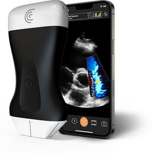
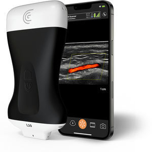
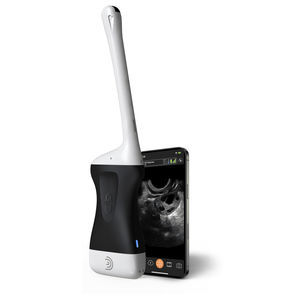

12+
Congrès médicaux
représentés
représentés
3K+
Cliniciens formés
à l'écho mobile
à l'écho mobile
98%
Satisfaction utilisateur
écho portable
écho portable
40+
Publications &
études partagées
études partagées
Vidéos des Congrès
▶ Vidéo
🎙 Congrès International
Démonstration live — Échographie portable en urgence
Retour complet sur notre participation au congrès international d'imagerie médicale. Découvrez comment l'échographe LV1 a été utilisé en conditions réelles par des urgentistes et anesthésistes.

🎙 Congrès SFMU
Echo-FAST en médecine d'urgence — Résultats terrain
Février 2026

🎙 Congrès SFR
Innovation radiologique : l'écho sans fil en point of care
Janvier 2026

🎙 Formation
Workshop LV1 — Formation accélérée échographie mobile
Décembre 2025

🎙 Congrès ESICM
Réanimation & écho mobile : protocoles de 2025
Novembre 2025
News — Échographie Mobile

Innovation
Nouvelle génération d'échographes sans fil : ce qui change pour le clinicien
La miniaturisation des sondes et l'IA embarquée transforment radicalement la pratique de l'imagerie point-of-care en 2026.

Étude clinique
Échographie cutanée mobile : résultats de l'étude multicentrique
Une étude portant sur 420 patients démontre l'efficacité diagnostique de l'écho portable dans les services de dermatologie.

Gynécologie
Écho mobile en gynécologie obstétrique : adoption en forte hausse
Les maternités et cabinets de gynécologie adoptent massivement l'échographie portable pour le suivi de grossesse en ambulatoire.